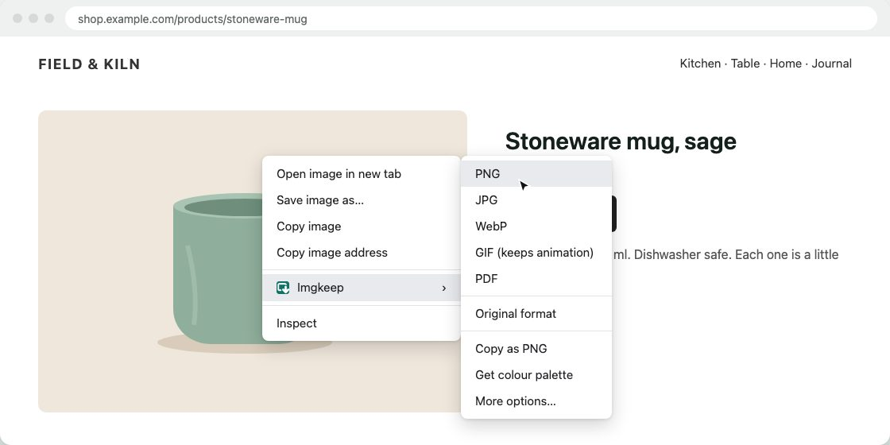

Why Chrome saves images as WebP (and how to get JPG or PNG)
Short answer
Chrome saves the exact file the website sent, and many sites now send WebP because it's smaller than JPG or PNG at the same quality. Chrome has no setting to change this. To get a JPG or PNG, convert the image: as you save it, with an extension, or afterwards in Paint (Windows) or Preview (Mac).
Updated
Why does Chrome save images as WebP?
Every time Chrome asks a site for an image, it also says which formats it can show. Current versions of Chrome list AVIF and WebP first. Many sites and image services use that to pick the smallest file for you, because WebP and AVIF are usually much smaller than JPG or PNG at the same quality. Pages load faster.
When you choose Save image as…, Chrome saves exactly the file it received. It doesn't convert anything. Two things follow from that:
- An image address can end in
.jpgand still deliver WebP. The site decides by what the browser accepts, not by the name. - The same image can arrive as AVIF instead. See how to save AVIF as JPG or PNG.
- On Windows, a JPG can land as
.jfif. That one is only a naming problem: Chrome saves images as JFIF.
Is there a Chrome setting to stop it?
No. Chrome has no option for the format of saved images, and no setting that tells sites you don't want WebP. So the fixes below all work on the image itself: converting it as you save it, or afterwards.
How do I get a JPG or PNG instead?
Already saved a WebP? Convert the files you have in your browser, without uploading: WebP to JPG.
1. Copy and paste into an image editor
Right-click the image and choose Copy image. On Windows, paste it into Paint (Ctrl+V) and use File › Save as. On a Mac, open Preview, choose File › New from Clipboard, then File › Export. Nothing to install. The catch: several steps per image, and a transparent background may not survive.
2. Save it, then convert it
Save the WebP as usual, open it in Paint (Windows) or Preview (Mac), and save or export it as JPEG or PNG. Also nothing to install, but you end up with two files and a few extra clicks each time. Step by step: how to save WebP as JPG or PNG.
3. Take a screenshot
Press Win+Shift+S on Windows or Cmd+Shift+4 on a Mac and select the image. It works on anything you can see. The catch: you get what's on screen, not the original file, so it's often smaller and may include bits of the page. If the right-click menu doesn't offer the image at all, see when right-click won't save an image.
4. Use an extension that converts as it saves
An extension can add a "save as PNG or JPG" option to the right-click menu and convert for you, at full size, in one step. The catch: you're trusting code that runs in your browser, so choose carefully (see the checklist below).
Our extension
Imgkeep
We make Imgkeep, a free Chrome extension for exactly this. Right-click any image, choose Imgkeep: Save image as, then PNG, JPG, WebP, GIF, PDF or Original format. It converts on your computer and saves to Downloads, a folder you pick, or wherever you choose each time. It only looks at a page when you ask it to find an image there, never changes a page, and it's open source.

How do I judge an image extension?
Older articles often recommend "Save image as Type". Google removed it from the Chrome Web Store in March 2026, after a change of owner, when it was found inserting affiliate links into shopping sites (9to5Google). If you still have it, remove it. Whatever you install, check:
- Permissions. Does it ask to "read and change all your data" on every website? Saving the image you right-click doesn't need that.
- Data. Read the "Privacy" section of the store listing. Does it say it collects anything?
- Owner and updates. Is it still maintained? Has the developer changed recently?
- Source. Is the code public, so others can check what it does?
The full checklist, and what happened to Save image as Type: a safe alternative to Save image as Type.
Related guides
- How to save WebP as JPG or PNG
- How to save AVIF as JPG or PNG
- Chrome saves images as JFIF? How to get JPG
- How to save an animated WebP as a GIF
- How to save an image as a PDF in Chrome
- A safe alternative to Save image as Type
- When right-click won't save an image
- How to get an image from the web into Canva, Figma or Google Slides
Questions
Can I just rename the .webp file to .jpg?
Renaming changes the name, not the file. It's still WebP inside. Some apps look inside and open it anyway; many don't. Convert it instead.
Is WebP bad?
No. It's a good format that makes pages load faster, and current browsers and operating systems can show it. The trouble is older apps, some upload forms and some print or design tools that still expect JPG or PNG.
JPG or PNG?
PNG keeps every pixel and any transparency, but files are bigger. JPG is smaller and fine for photos, but it has no transparency. More in the WebP guide.